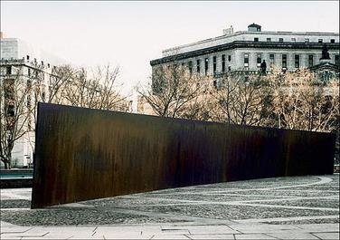

Tilted Arc
Richard Serra · 1981 · COR-TEN steel · 120 × 12 ft
In copyright. Look and learn: shown for study, not for download.
The General Services Administration commissioned this sculpture in 1979 for the plaza of a federal building in Manhattan, and the contract made it the property of the United States. It was a plate of COR-TEN steel 120 feet long and 12 feet tall, installed in 1981. Within months more than 1,300 government employees had signed a petition for its removal. At a public hearing in March 1985, 122 people testified for keeping it and 58 for removing it. It was removed in 1989 and has not been shown publicly since, in accordance with Serra's wishes.